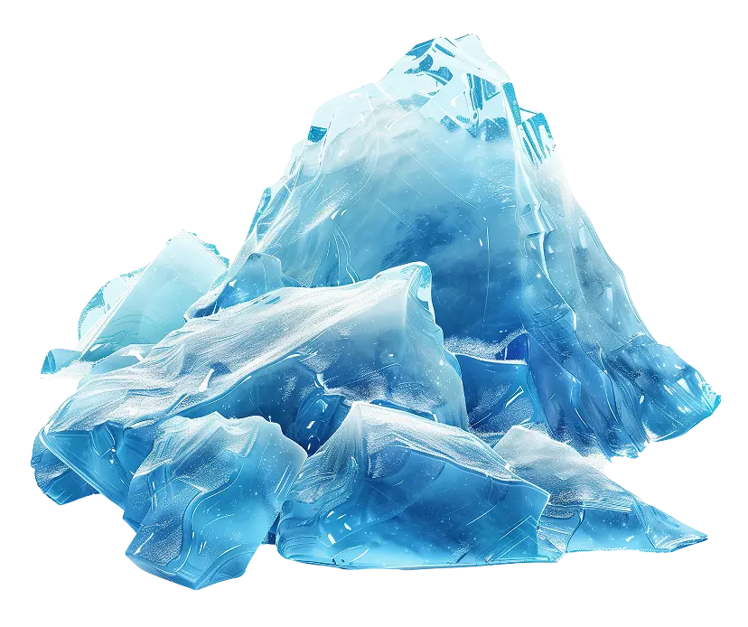
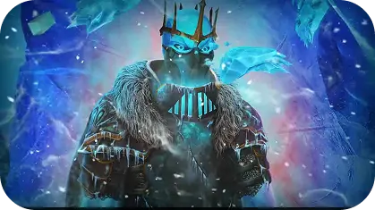

<section class="story" id="storyline">
  <div class="story-container container">
    <h2 class="section-header">
      
      Storyline
    </h2>
    <h3 class="collectibles-slogan">
      The frost came without warning. The betrayal was no accident
    </h3>
    <div class="story-up">
      <p class="section-p blue-background-storyline">
        After the king's sudden death, you—his only living descendant—must face
        your bloodline’s darkest truth: a banished sorceress has returned,
        wielding a frost curse born of forgotten magic. Her plan is clear—freeze
        the kingdom, control its magic, and rewrite its history with her at the
        helm
      </p>
      
    </div>
    <div class="story-middle">
      <p class="section-p cyan-background-storyline">
        But there’s still hope. Guided by your father’s last journal and the
        memories of a once-proud empire, you must reclaim the relics of the
        royal bloodline and ignite dormant magical sanctuaries. Along your path,
        you’ll forge bonds with spellcasters, battle cursed beasts, and make
        impossible decisions
      </p>
      
    </div>
    <p class="section-p blue-cyan-background-storyline">
      Every step forward unravels more of the truth—and brings you closer to a
      final confrontation that will define the kingdom’s future
    </p>
  </div>
</section>
